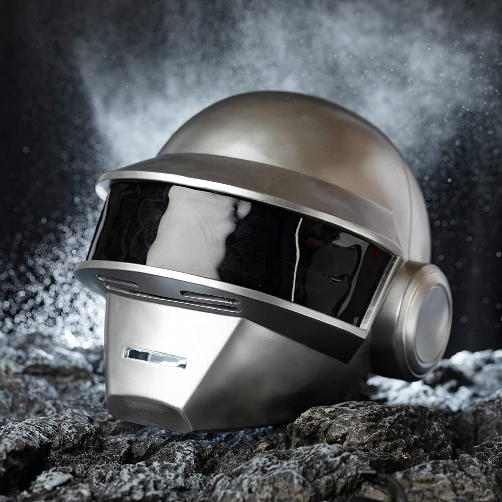
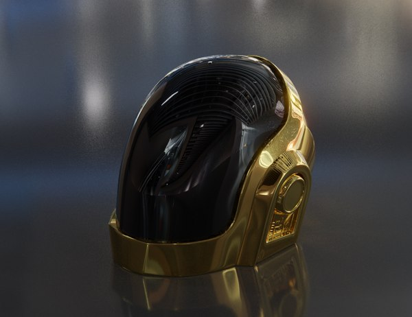
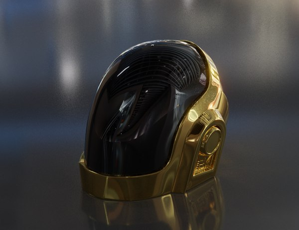

Integrantes
Integrantes


Thomas Bangalter
(3 de enero de 1975, París, Francia) es un DJ y productor francés, conocido por ser miembro de Daft Punk junto a Guy-Manuel de Homem-Christo. También ha sido miembro de Stardust y Together. Bangalter también es el fundador de la discográfica Roulé.
Guy-Manuel de Homem-Christo
(8 de febrero de 1974, Neuilly-sur-Seine, Francia) es un DJ y productor francés, conocido por ser miembro de Daft Punk junto a Thomas Bangalter. También fue cofundador y miembro del grupo Le Knight Club y fundador de la discográfica Crydamoure.